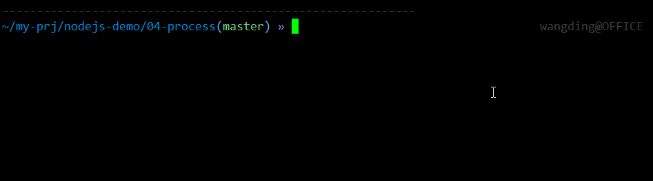

第 2 课：全局（上）
1. 全局变量
要求：
- 创建 02-global-var 目录
- 编写 01-file-dir-name.js 脚本
- 在控制台输出
__filename和__dirname两个变量 - 完成项目目录下，'views' 子目录中，网页模板 'view.html' 的路径拼接
- 在控制台输出拼接后的路径信息
2. 阅读 Node.js API 资料
3. 控制台格式化输出信息
要求：
- 创建 03-console 目录
- 编写 01-format.js 脚本
- 定义一个 user 对象，包含三个字段：name, age, qq
- 使用三种占位符，分别输出三种变量类型：字符串，整数和 JSON 数据
- 以两种不用占位符的方式输出
user.qq信息 - 向标准错误流中输出信息：
Error：something wrong! - 通过命令行重定向，观察 console.log 和 console.error 两个方法所使用流的区别
./01-format.js > output.txt ./01-format.js 2> error-msg.txt
4. 控制台基准测试
要求：
- 编写 02-time.js 脚本
- 对耗时任务运行的时间进行采样
- 在控制台输出采样的时间
- 多运行几次程序，观察同样的耗时任务每次采样的时间是否相同
5. 阅读 Node.js API 资料
6. 获取平台信息
要求：
- 创建 04-process 目录
- 编写 01-information.js 脚本
- 向控制台打印 CPU 架构信息以及操作系统版本信息
- 打印进程 id 信息以及 Node.js 可执行文件的绝对路径信息
- 在脚本中增加标准输入流的读取操作，让程序暂停执行
- 执行 Linux 命令
ps aux，验证当前进程的 ID 信息和程序中得到的进程 ID 信息相同 - 打印 Node.js 版本信息，当前登录用户 id 信息，当前登录用户所属组 id 信息以及当前脚本所在路径信息
- 在命令行执行 'node -v' 命令，验证程序输出的 node.js 版本信息是否正确
- 在命令行执行 'id' 命令，验证程序输出的登录账户 id 信息是否正确
- 在命令行执行 'pwd' 命令，验证程序输出的当前工作目录信息是否正确
- 打印内存使用情况
- 打印环境变量
- 在命令行执行 'env' 命令，验证程序输出的环境变量信息正确
7. 获取命令行参数
要求：
- 编写 02-calc.js 脚本
- 获取命令行参数，命令行参数为一个数学表达式
- 如果没有命令行参数，打印程序的使用说明
- 如果命令行参数是 --help 或者 -h，打印程序的使用说明
- 如果命令行参数多于 3 个，多余的参数忽略
- 对命令行参数的表达式进行求值，打印求值结果
- 如果命令行参数不是合法的数学表达式（例如：
a+b），则打印错误信息 命令行参数的格式如下：
图：02-calc，王顶，408542507@qq.com
8. 操作标准输入输出流
要求：
- 编写 03-std-io.js 脚本
- 逐条打印提示信息：姓名、邮箱、QQ 号和手机号码
- 读取用户键盘输入信息，保存到对象中
- 用户键盘输入结束后，打印完整的对象信息
- 用户随时可以按
Ctrl + D，终止信息输入，打印对象信息，程序结束运行
9. 处理退出码
要求：
- 编写 04-exit-code.js 脚本
- 通过命令行参数获取程序的退出码，以该退出码退出程序
- 通过
echo $?命令查看程序的退出码 - 对命令行参数的退出码，做数据合法性校验，如果命令行参数不正确，控制台打印准确的错误提示信息
10. 处理信号量
要求：
- 编写 05-signal.js 脚本
- 接收信号量，并对信号（SIGINT 和 SIGTSTP）进行处理
- 用控制台快捷键，给程序脚本发送信号量，测试程序的功能逻辑
- CTRL+C 发送 SIGINT 信号量，让程序退出
- CTRL+Z 发送 SIGTSTP 信号量，让程序挂起
- 用 kill 命令，给程序脚本发送信号量，测试程序的功能逻辑
11. 实现 my-kill 程序
要求：
- 编写 06-my-kill.js 脚本
- 获取命令行参数，得到进程 ID 信息和信号量标识符
- 对命令行参数有数据合法性校验，数据非法时，在控制台打印准确的错误提示信息
- 向指定进程 ID 的进程发送特定的信号量
- 用 06-my-kill.js 脚本，向 05-signal.js 脚本发送信号量，测试两个程序的功能逻辑
12. 阅读 Node.js API 资料
- 阅读 global API 资料 中的六个定时器函数相关的资料
13. 定时炸弹
要求：
- 创建 05-timer 目录
- 编写 01-bomb.js 脚本
- 编写定时炸弹构造函数
- 炸弹的
start方法启动定时器，3 秒钟之后炸弹爆炸 - 炸弹的
clear方法取消定时器 - 实例化两个定时炸弹对象：b1 和 b2
- b1 调用
start方法 - b2 调用
start方法 - b2 在 1 秒钟之后，调用
clear方法 - 运行程序，测试程序的执行效果
14. 定时器
要求：
- 编写 02-timer.js 脚本
- 创建两个定时器：
timer1和timer2 - 两个定时器都是 500 ms 触发一次定时任务
timer1启动后，倒计时 5s 结束timer1并启动timer2timer2定时任务执行 5 次后退出- 运行程序，测试程序执行的效果
15. sleep
要求：
- 编写 03-sleep.js 脚本
- 用 Promise 实例封装 sleep 方法，可以让程序暂停执行若干毫秒
- 运行程序，测试程序执行的效果
- 使用 node.js v15 引入的 Promise 版本的 setTimeout 实现 sleep